Claude Code 使用教程：新手入门必学的基础技巧
大家好，我是小林。
最近这一年，AI编程真的火到没朋友，各种工具轮番上线，相信很多做开发的朋友都或多或少尝试过。
但要说哪款工具，真正颠覆了我的编程习惯、让效率直接翻倍，那我必须实名安利 Claude Code！
可能还有朋友对它不太熟悉，简单说一句：它是Anthropic推出的终端AI编程助手，不用切换窗口，就能直接读写你的项目文件、执行命令、搜索代码，甚至帮你跑测试、提交代码，相当于把一个专业编程助手，直接装进了你的终端里。
这段时间，很多林友问我：现在Claude Code、openclaw这些 AI Agent这么火，面试的时候会不会考啊？
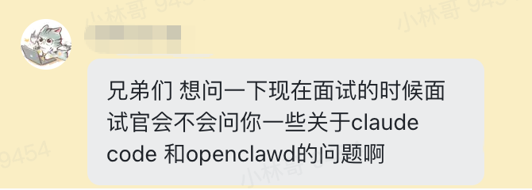
答案是肯定的！尤其是面试后端或者Agent开发岗位，十有八九会聊到这类工具。浅一点的，会问你实际使用感受和心得；深一点的，直接追问实现原理，一点不含糊。
其实之前我已经在公众号，分享过两篇万字长文，专门图解Claude Code的核心原理，还有openclaw的大厂面试题，没来得及看的林友，后续一定要抽空补一补，对面试帮助很大：
- 万字长文图解 Claude Code 核心原理
- 万字长文图解 openclaw 大厂面试题
除此之外，我还特意收集了一波Claude Code相关面经，发现一个关键点：除了原理，面试官还特别在意，你有没有真正用过这类AI编程工具。毕竟工作后，这些工具就是帮你提升效率、完成开发任务的「刚需」，光懂理论可不行。
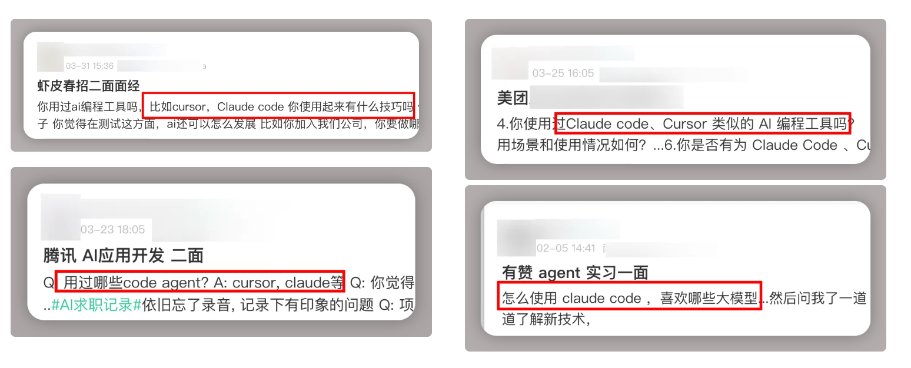
所以今天这篇文章，我不聊复杂的原理，也不堆枯燥的理论，就专门分享 Claude Code 最常用的基础使用技巧。
这些技巧看似简单，但都是日常编程中高频用到的，对于第一次入门 Claude Code 的朋友来说，绝对能帮你快速上手、少走弯路。当然，后续我也会持续更新，分享更多进阶技巧，大家可以持续关注。
废话不多说，咱们直接开干！
01｜Claude Code 的基本操作
在动手写项目之前，先花两分钟了解一下 Claude Code 的基本操作。
启动 Claude Code
打开你的终端，进入项目的目录，输入：
claude
第一次启动后，你会看到 Claude Code 的交互界面，底部有一个输入框，你可以直接在里面打字跟 Claude 对话。
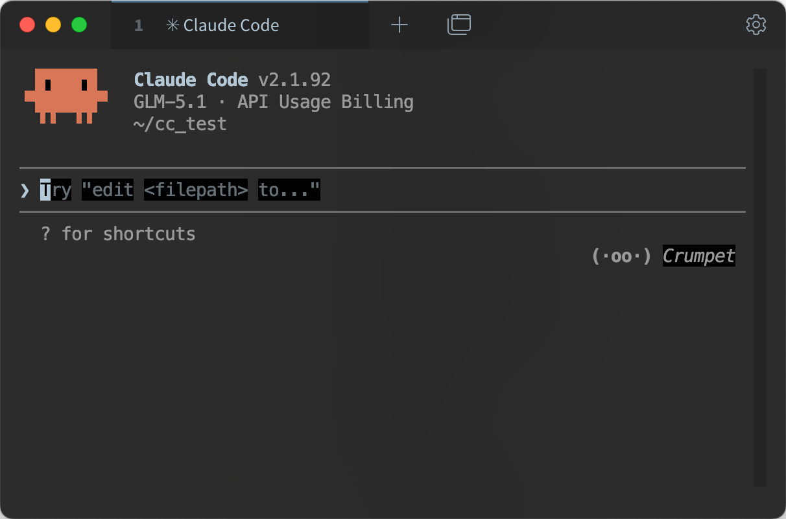
比如你可以试试输入：
你好，请简单介绍一下你自己
Claude 会回复一段自我介绍。这就是最基本的交互方式，你打字，它回答。
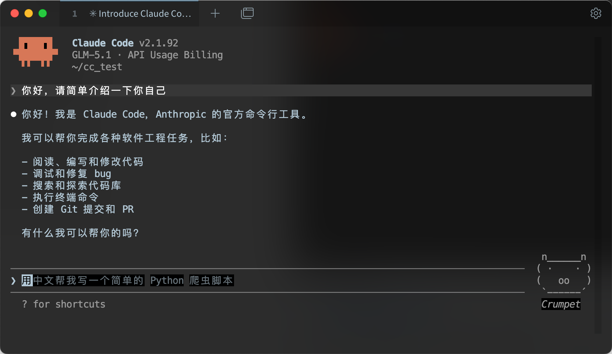
三个工作模式
Claude Code 有三个工作模式，这是你必须要了解的。
按 Shift+Tab 可以在三个模式之间切换：
- Normal 模式（默认）：Claude 每一步操作都需要你确认后才执行。比如它要创建一个文件，会先问你「允许吗？」，你同意了它才会创建
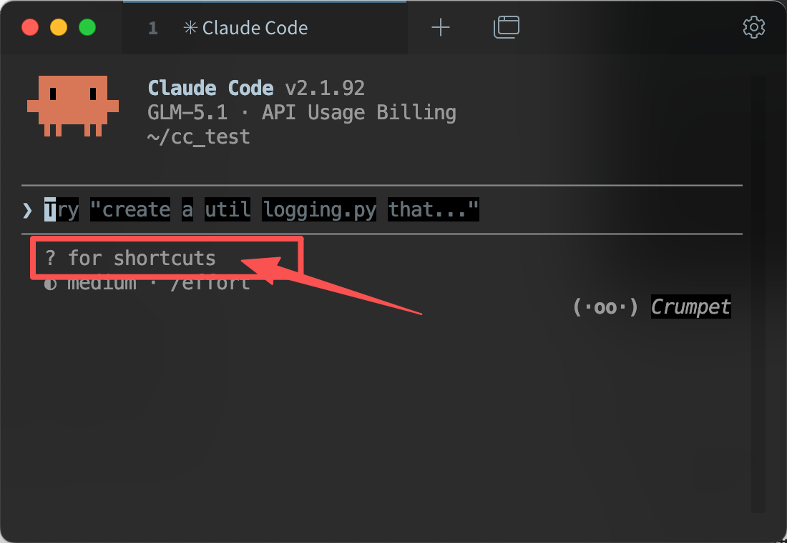
- Auto-accept 模式：Claude 自动执行所有操作，不需要你逐个确认。适合你对 Claude 已经比较信任的场景
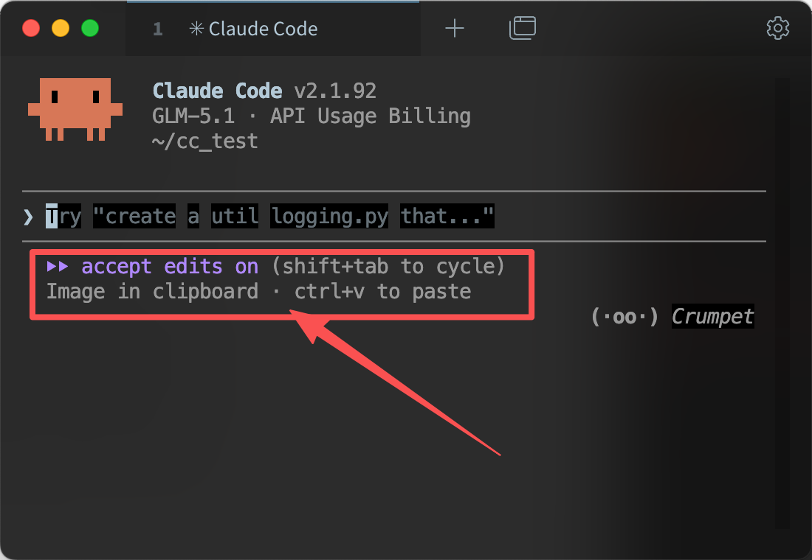
- Plan 模式：Claude 只看不改，先帮你分析和规划，规划过程中不会修改你的文件，等你确定计划没问题，才会一步一步执行计划
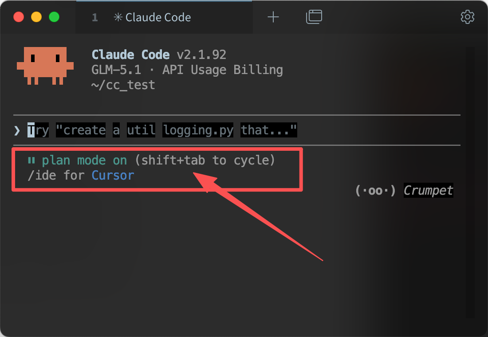
新手建议：先用 Normal 模式，能看到 Claude 每一步在干什么，心里有底。等熟悉了再切到 Auto-accept 提速。
好，基本操作就这些。接下来我们直接上手写项目。
02｜用 Plan 模式规划
很多人一上来就迫不及待地让 Claude 写代码，结果写出来的东西跟自己想的完全不一样，又要改来改去。
我的建议是：先规划，再动手。
怎么做？先按 Shift+Tab 切到 Plan 模式，然后输入下面的提示词：
请帮我开发一个番茄钟 Web 应用，技术栈用 React + TypeScript + Tailwind CSS。功能包括：25 分钟倒计时、开始/暂停/重置、番茄计数、休息提醒。请先帮我规划一下项目结构和开发步骤，不要写代码。
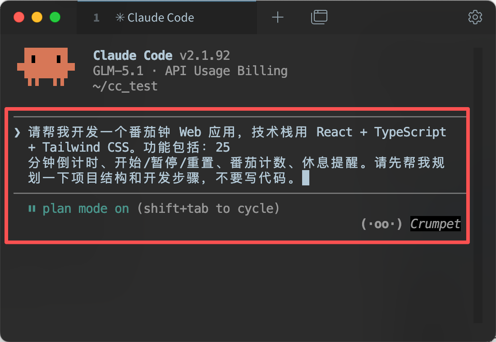
注意我写的这段提示词有几个关键点：
- 明确技术栈：React + TypeScript + Tailwind CSS，不让 Claude 自己猜
- 明确功能：25 分钟倒计时、开始/暂停/重置、番茄计数、休息提醒
- 明确要求：先规划不写代码
这种「清晰明确」的提示词写法，是用好 Claude Code 的基本功。提示词越具体，Claude 输出的质量就越高。
在 Plan 模式下，Claude 会给你输出类似这样的方案：
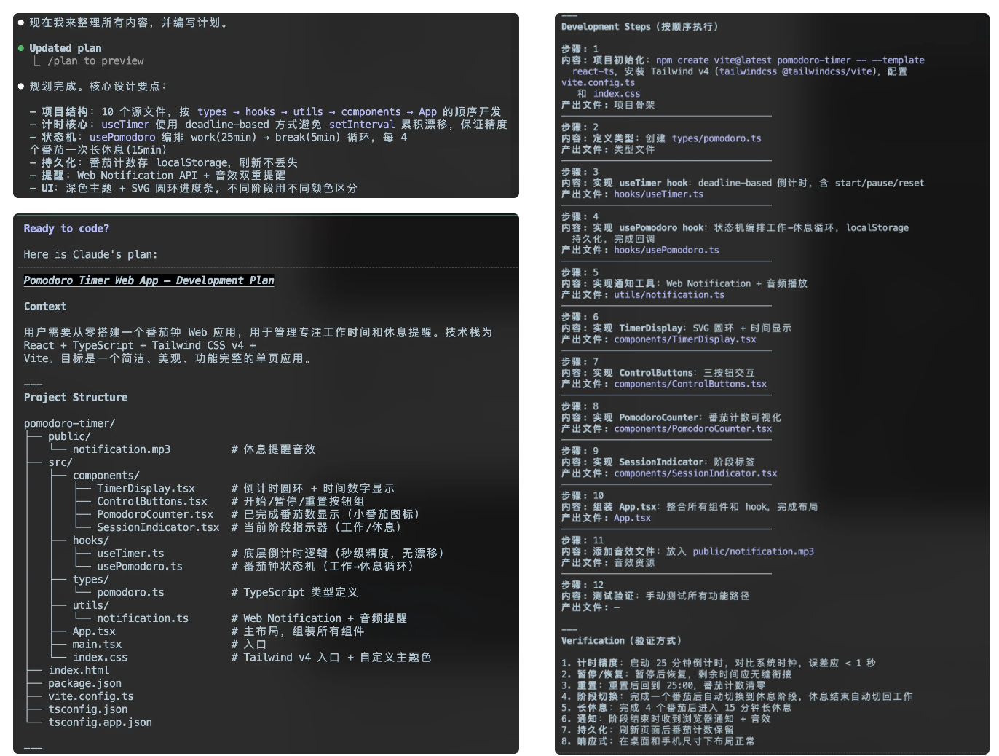
你看，是不是很清晰？
规划完成之后，Claude 会让你做选择：
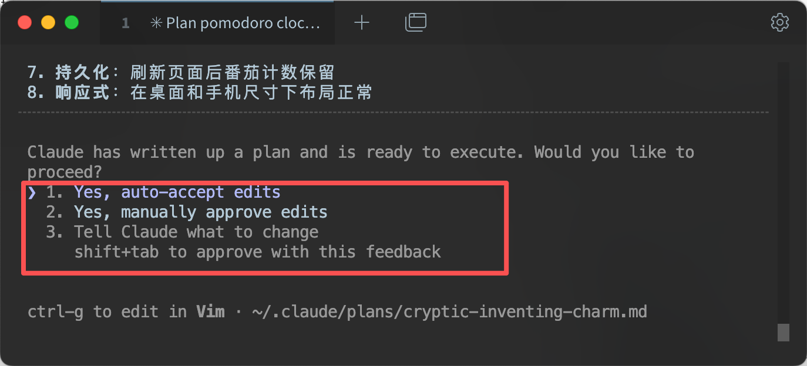
- 第一个：自动接受所有修改，Claude 直接改代码，不再弹窗问你
- 第二个：手动审核每一处修改，Claude 改代码前会让你逐个确认
- 第三个：给 Claude 反馈，调整它的修改方案（比如改哪里、怎么改）
这个计划是写到一个 md 文档里的，这样在执行任务，不会做着做着就忘记执行到哪了，而且你还可以用 ctrl+g 命令去编辑这个计划 md 文档。
这里我们不对计划做任何修改，直接选择第一个，接下来 Claude 就会开始按照规划好的计划，一步一步开始执行了。
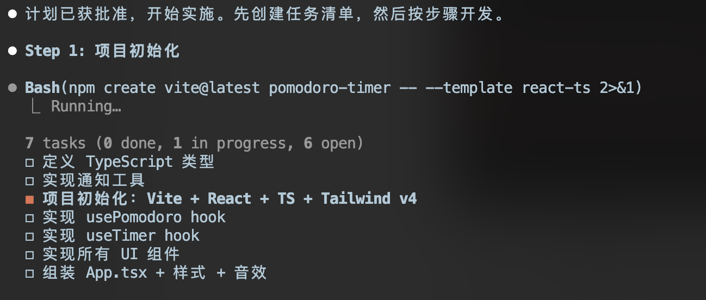
执行过程中会弹出很多需要你确认的对话，我这里全部都选择了 yes。
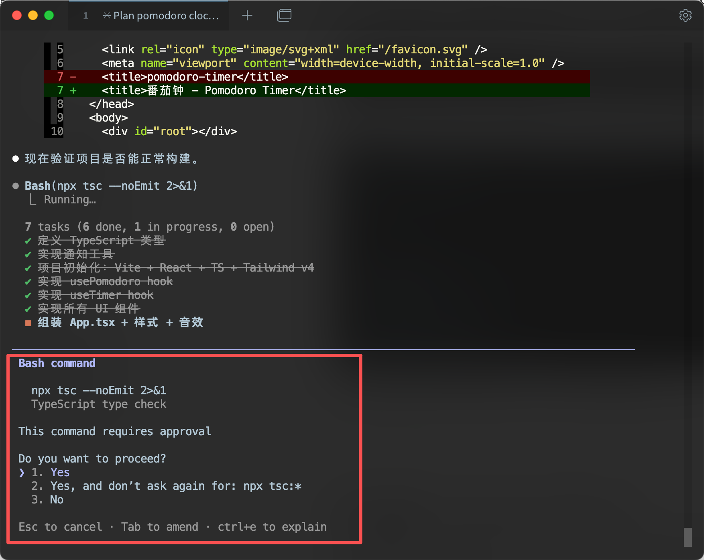
开发完成之后，Claude 也会总结一段话告诉你
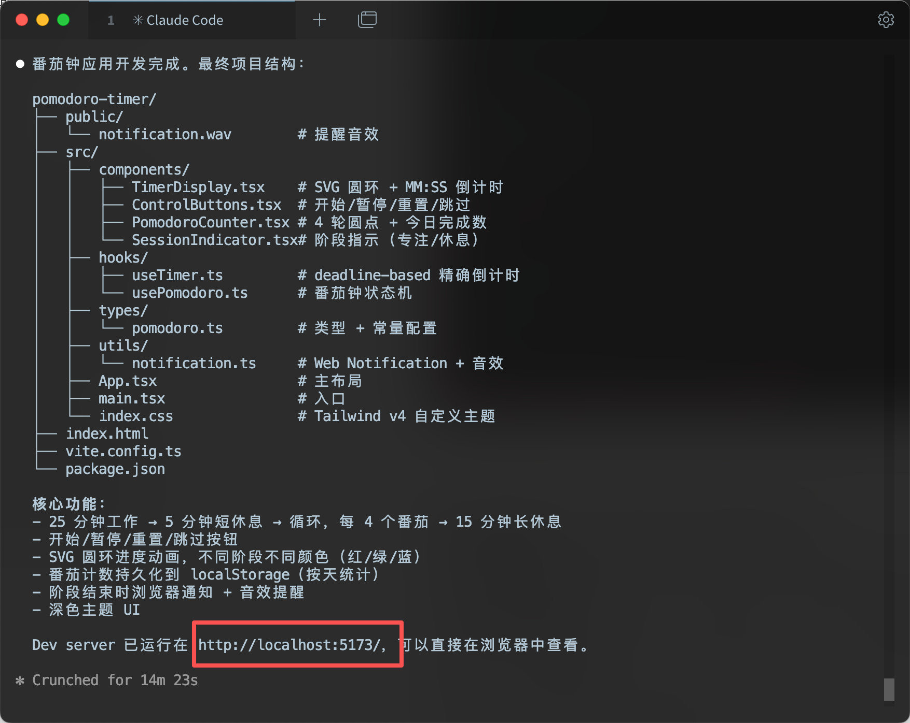
我尝试打开这个 url，发现打不开
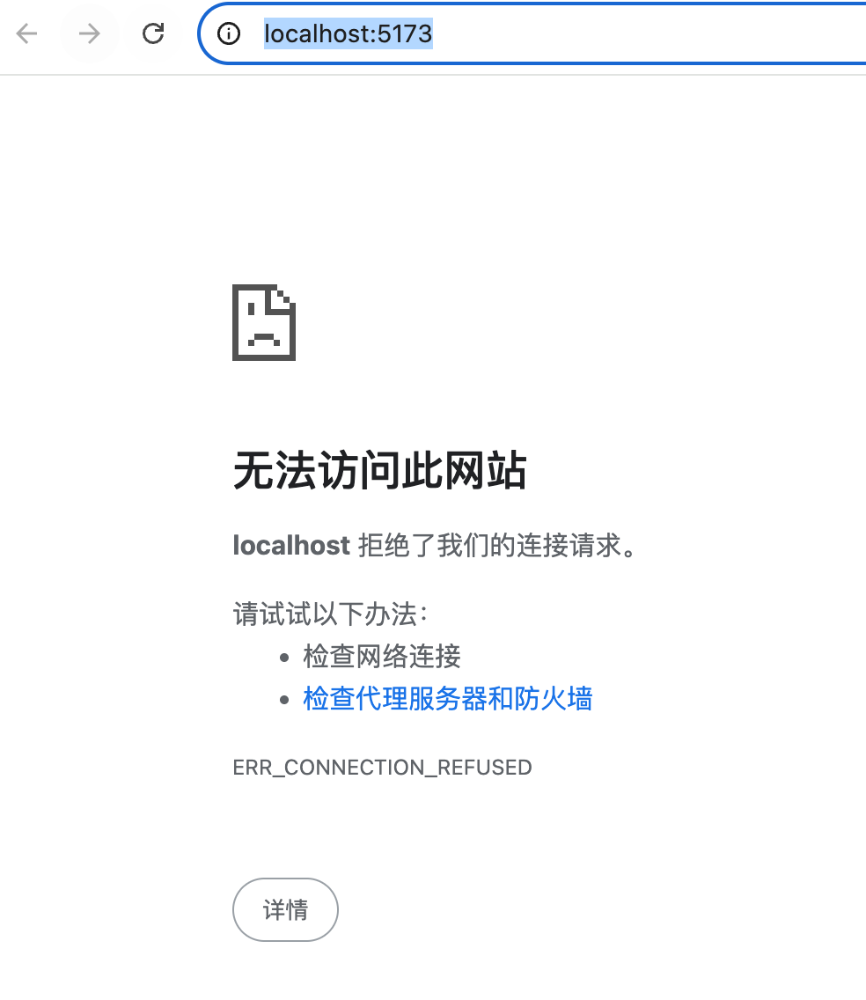
但是不慌，我们直接把问题现象告诉 Claude Code 就行了，让它帮我们排查
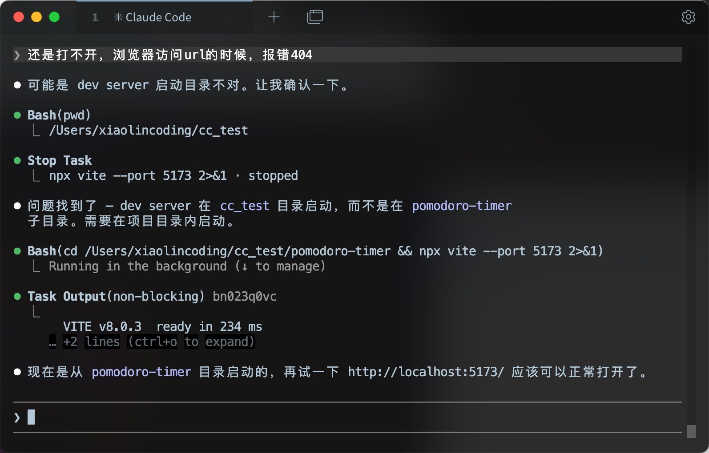
修复 bug 之后，再次访问 url，就可以打开了。
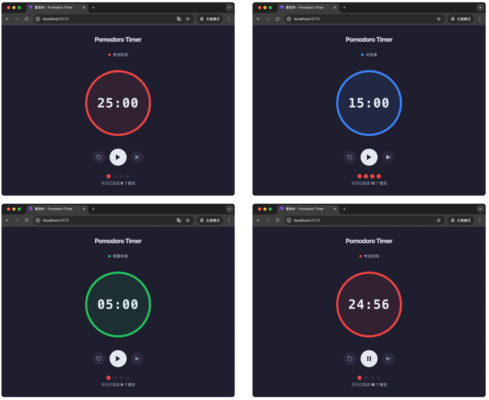
当然，哪里不满意，我们还是可以继续跟 Claude Code 反馈的，比如这里我想增加一个功能：
给番茄钟添加一个任务标签功能：在开始计时前，弹出极简输入框让用户填写本次任务名称，计时结束后将任务名与时间一起存入 localStorage，仅在页面角落添加一个历史记录入口。
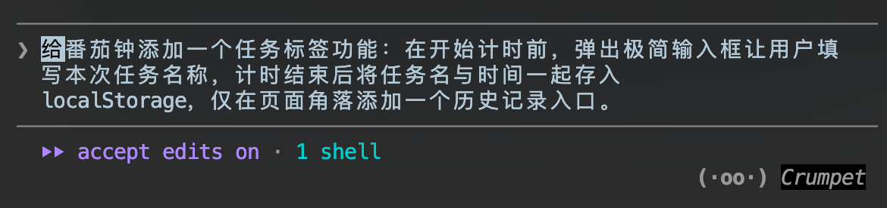
完成之后效果如下：
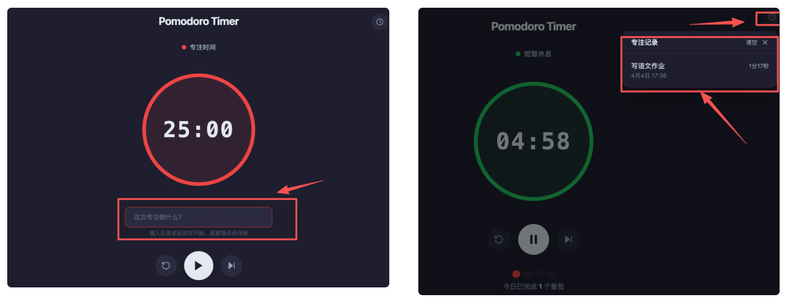
03｜需求不明确？让 Claude 来「采访」你
前面我是直接给出了明确的提示词，比如技术栈、功能、要求都写得清清楚楚。但现实中，很多时候你自己都还没想清楚要做什么。
比如你只知道「我想做一个番茄钟」，但不知道用什么技术栈、要不要加统计功能、界面要什么风格……脑子里只有一个模糊的想法。
这种情况下，与其自己硬憋一个需求文档，不如让 Claude 来「采访」你。
试试这样写提示词：
我想做一个番茄钟应用，但我还没想清楚具体要怎么做。
请你先不要写代码，而是向我提几个问题，
帮我理清需求，等我们讨论清楚了你再动手。
Claude 会像一位经验丰富的产品经理一样，主动问你：
好的，我有以下几个问题想跟你确认：
1. 技术栈偏好：你想用 React、Vue 还是原生 HTML/CSS/JS？
2. 目标平台：是纯 Web 应用，还是要做成桌面端或移动端？
3. 核心功能：
- 倒计时时长是固定的 25 分钟，还是想让用户自定义？
- 需要番茄计数功能吗？
- 休息提醒怎么实现？弹窗、音效还是浏览器通知？
4. 数据存储：需要保存历史记录吗？比如今天完成了几个番茄。
5. 界面风格：有参考的设计吗？喜欢简约风、卡通风还是其他？
你看，它问的问题是不是很到位？有些问题你可能压根没想到，比如「休息提醒用什么方式」「要不要保存历史记录」。
你只需要逐一回答这些问题，Claude 就能根据你的回答，帮你梳理出一份完整的需求方案。这比你自己在脑子里瞎想要高效得多。
这种「让 AI 来问你」的技巧，在需求不明确的时候特别好用。本质上就是让 Claude 帮你做需求分析，而不是一上来就埋头写代码。
想清楚需求之后，再回到前面的步骤，让 Claude 出方案、写代码就行了。
04｜页面不好看？用 Skill 美化
功能都写完了，你打开浏览器一看，嗯，功能是有了，但页面不算太好看。
你当然可以让 Claude 帮你调样式，但通常的效果是「能用但不好看」，配色奇怪、布局死板。
有没有一种方式，能让 Claude Code 突然「学会」前端设计？
还真有。Claude Code 有一个叫 Skills 的机制，你可以把它理解为 Claude 的「专业技能包」。Skills 是由专业人员编写的能力扩展，包含复杂的指令、模板和参考文档，可以让 Claude 在特定领域表现得更好。
其中有一个 Skill 叫 frontend-design，专门用来生成高质量的前端界面。
安装 frontend-design Skill 的方式很简单，在 claude code 终端输入下面的命令就行：
/plugin install frontend-design
执行后，Claude Code 会自动从插件市场下载并安装这个 Skill。
安装成功之后，你就能在 /plugin 命令的「Installed」选项里看到 frontend-design 是 enabled 状态的。
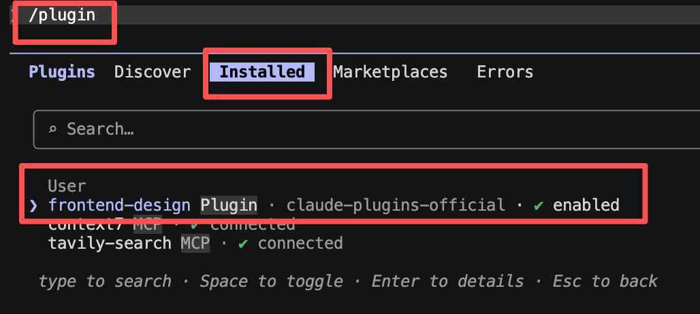
安装好之后，你只需要这样输入：
番茄钟的功能都完成了，但页面很丑。请用 frontend-design skill 帮我重新设计界面。
我想要简洁现代的风格，暖色调，圆形倒计时显示，配合番茄的红色主题。
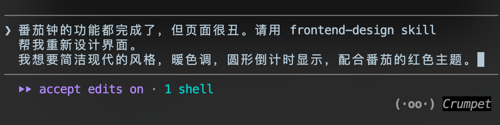
Claude Code 会自动加载 frontend-design 这个 Skill，然后按照专业的设计标准来重构你的页面。
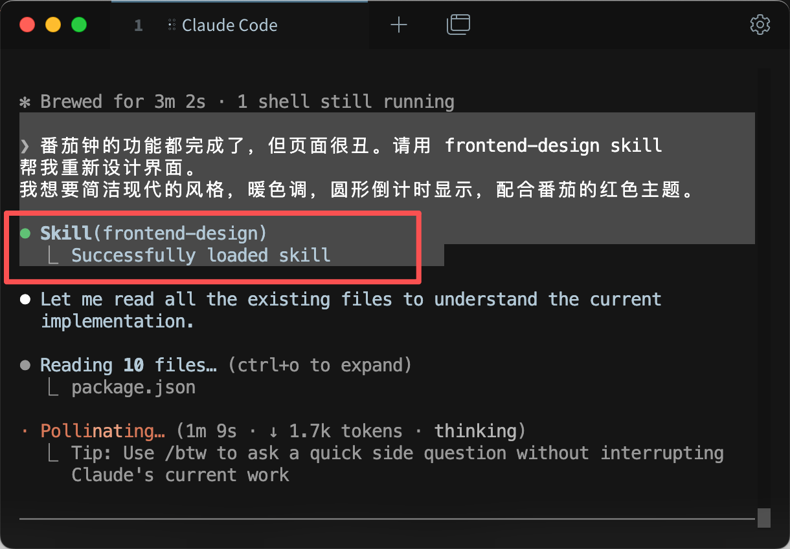
它会重新设计配色、布局、字体、交互动画，出来的效果跟之前完全不一样。配色协调、间距合理、有微交互动画，看起来就像一个有设计经验的开发者写出来的。
关键是，你不需要自己懂设计，一个 Skill 就搞定了。
经过 frontend-design skill 优化之后的样子是这样的：
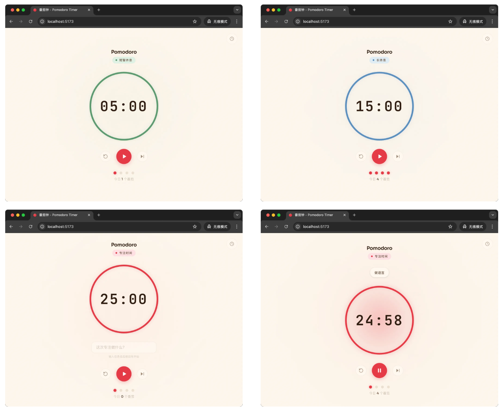
整体还是比之前好看很多的，不过因为我这个案例的应用功能不多，看起来也比较简单，所以能优化的地方也有限。
我的「小林简历」网站的前端其实也是用 frontend-design skill 优化过页面风格的，下图左边是 ai 第一版设计的 ui，右边就是用了 frontend-design skill 优化过的页面，效果就特别明显了。
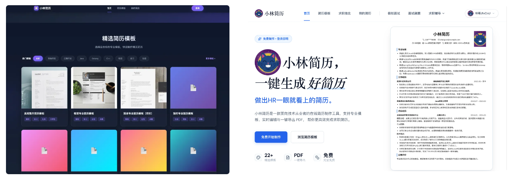
05｜用 @ 精准指定文件
页面美化完了，你想微调一下倒计时数字的样式，比如把数字改大一点，加个呼吸动画。
但项目文件越来越多，你不想让 Claude 乱翻一通，改到不该改的文件。
怎么办？用 @ 符号精准指定文件：
请把倒计时数字改大一点，加一个呼吸动画效果。
@src/components/TimerDisplay.tsx
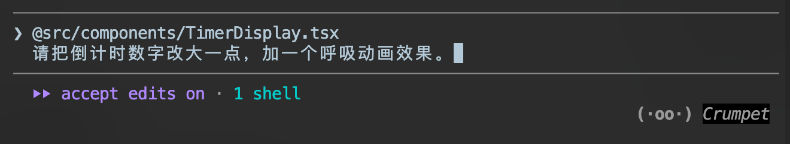
@ 的用法很简单：
@./src/components/Timer.tsx：引用单个文件@./src/components/：引用整个目录@./src/App.tsx @./src/styles/global.css：引用多个文件
这样 Claude 就知道你只想改你指定的文件，不会动其他代码。
@ 还有一个很容易被忽略的好处：节省上下文。
前面我们说过，Claude 的上下文窗口是有上限的。
如果你不给 Claude 指定文件，它为了理解你的需求，可能会自己去搜索和读取项目里的很多文件，每一行代码都会占用上下文空间。项目小的时候还好，项目一大，Claude 光是「翻文件」就能把上下文吃掉一大半。
但如果你用 @ 精准指定了文件，Claude 就只需要读取你指定的那几个文件，不用满项目乱翻。
比如你只 @ 了一个 200 行的组件文件，Claude 就只会读取这 200 行，上下文占用非常小。这就像你去图书馆查资料，与其让 Claude 自己在整栋楼里一排排书架慢慢找，不如直接告诉它「去三楼第二排第五本书」，效率高，还不浪费精力。
所以养成一个习惯：能 @ 指定文件就 @ 指定，别让 Claude 自己去找。 特别是在上下文已经用了一半以上的时候，这个习惯能帮你省下不少 token，让 Claude 保持「清醒」的状态工作。
@ 就像给 Claude 发了一个精确的地址，让它直奔目标，不再迷路，还省油。
06｜遇到复杂功能？用 ultrathink 深度思考
番茄钟的基本功能都做完了，现在你想加一个「统计面板」，展示今天完成了多少个番茄、累计专注了多长时间、连续完成了几天。
这是一个涉及数据结构设计和多组件协调的复杂功能。你直接让 Claude 写，它给的方案可能比较浅，只存了个总数，没有考虑日期切换、连续天数计算这些细节。
为什么会这样？其实道理很简单，Claude 默认是用「常规挡位」在思考，面对这种要兼顾数据结构、边界情况、持久化的活儿，它自然就容易漏东西。那怎么办？答案就是让它切到「最高挡」再开干。
这时候你可以在提示词里加上 「ultrathink」：
请帮我添加一个番茄统计面板，展示今日完成番茄数、累计专注时长、连续完成天数。
需要考虑数据的持久化存储（localStorage）。请 ultrathink 后给我方案。
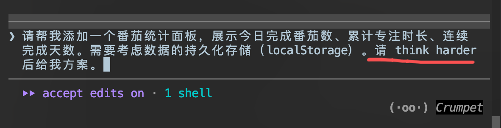
「ultrathink」会让 Claude 这一轮临时把思考的努力等级拉到最高，多花一些时间把方案从头捋一遍，分析得更深入。
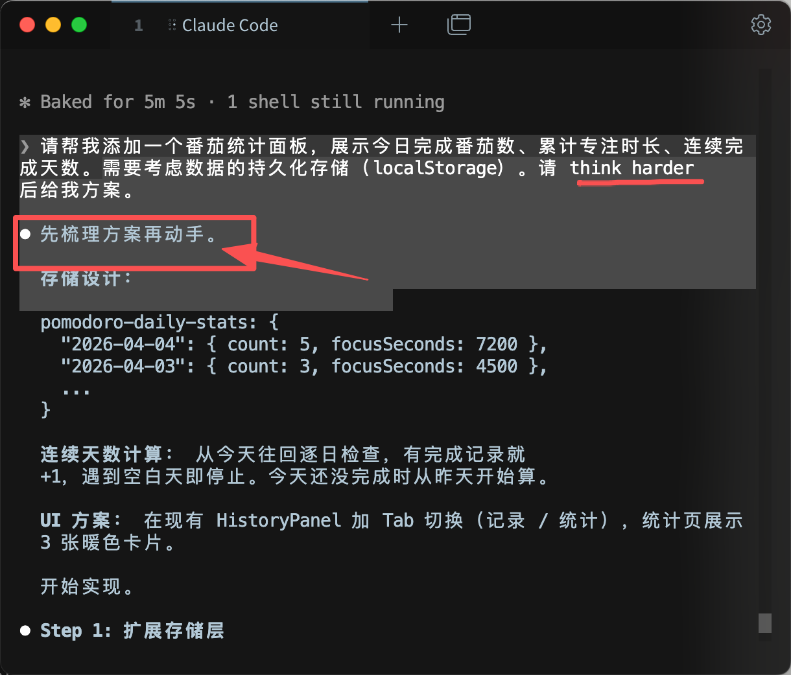
执行的时候，你也能看到，它会「先梳理方案再动手」，而不是边做边看。
这里林友要注意一个新旧版本的差异。老版本的 Claude Code 曾经有 think、think hard、think harder、ultrathink 四个思考关键词，网上很多教程也还在这么写。但在新版本里，官方已经明确说明：只有「ultrathink」这一个关键词是真正生效的，其他几个都只会被当成普通的提示词，不会真的加深思考。
那如果我不是偶尔用一下，而是希望整体都思考得更深，该怎么办？Claude Code 还提供了一个全局的「努力等级」设置，你可以用 /effort 命令切换，或者在 /model 里调整，效果会在后续所有对话里都生效。而 ultrathink，你就把它理解成「这一轮临时顶到最高挡」，用完就恢复成你原来的设置，适合一次性的硬骨头。
用个生活中的比喻，平时 Claude 就像你随手回答朋友的问题，一句话带过；加上 ultrathink 之后，它就像在解一道数学竞赛压轴题，会把每一步都仔细推演一遍再落笔。
加了「ultrathink」后，Claude 给出的统计面板方案明显更全面了。
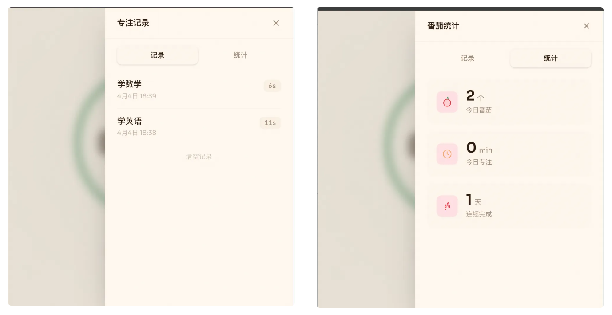
注意：思考越深，消耗的 token 越多，响应也会更慢。简单问题别滥用，复杂问题再用。
07｜ 每次都要重复解释项目？用 CLAUDE.md
项目写到这个阶段，你会发现一个烦人的事情：
每次 /clear 或者第二天重新打开 Claude Code，你都要重新告诉它「这是一个番茄钟应用，用了 React + TypeScript + Tailwind CSS，已经完成了哪些功能……」一遍两遍还行，多了真的很烦。
有没有办法让 Claude 永远记得你的项目信息？
有，用 CLAUDE.md。
CLAUDE.md 是什么？
CLAUDE.md 是一个放在项目根目录的文件，Claude Code 每次启动时都会自动读取这个文件的内容，作为它理解项目的背景信息。
你可以把它理解为 Claude 的「项目记忆」，只要你在这个项目目录下启动 Claude Code，它就知道你的项目是做什么的、用了什么技术栈、代码规范是什么。
怎么创建 CLAUDE.md ？
最简单的方式是输入 /init 命令：
/init
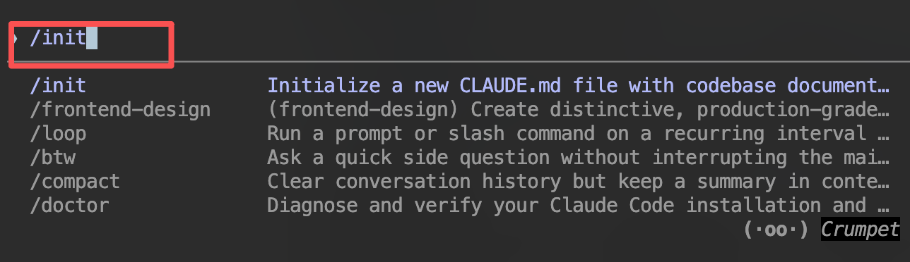
Claude 会扫描你的项目结构，自动生成一份 CLAUDE.md。
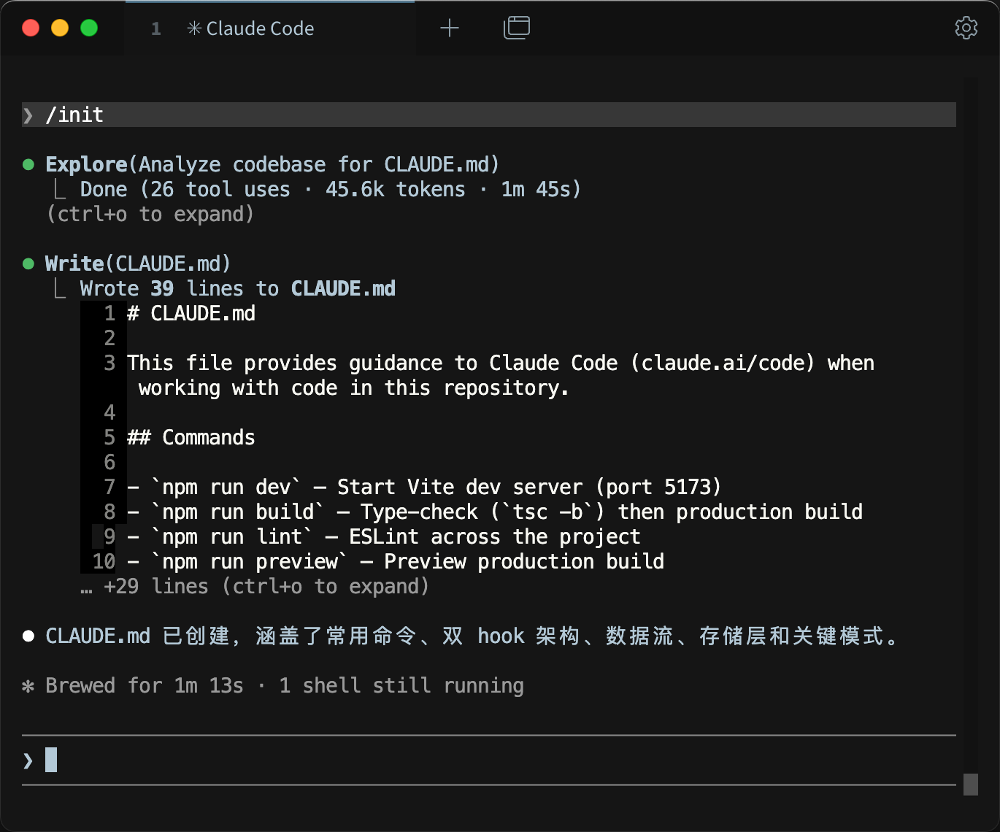
你也可以直接打开 CLAUDE.md 看看
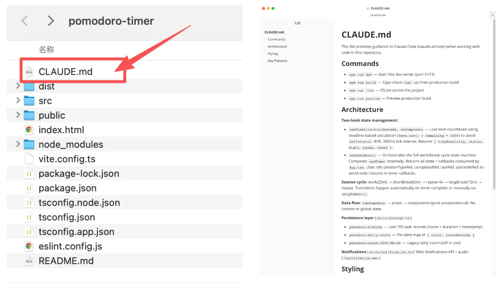
不过它默认是用英文描述的，要改成中文的话，也可以让 claude 把 CLAUDE.md 改成中文。
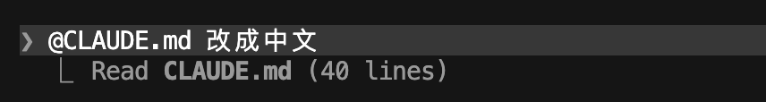
生成的 CLAUDE.md，主要是记录了番茄钟应用的命令、架构、样式等，跟项目描述有关的信息，有了这部分信息之后，后续每次与 Claude Code 对话时，上下文都会自动带上 CLAUDE.md 中的信息。
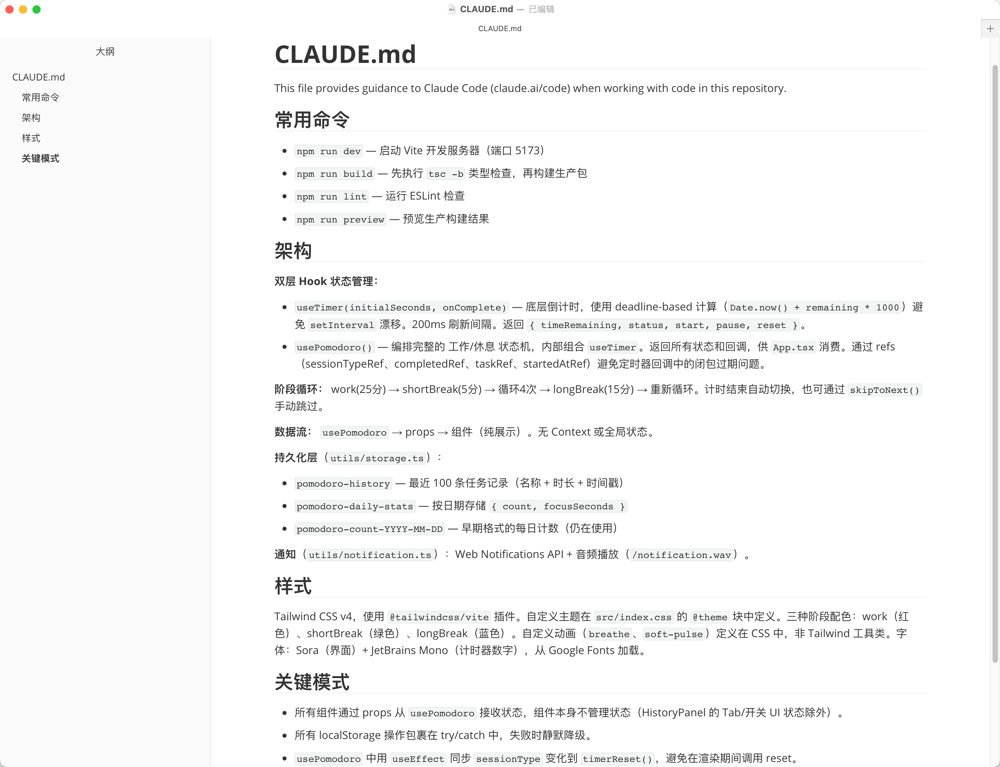
CLAUDE.md 本质上是一个 md 文档，你觉得哪里不满意，也是可以自己去修改的，比如要求代码规划要怎么样的，也可以写进来。
注意事项
不过， CLAUDE.md 不是越长越好，太长则会占用太多的上下文，而是越精准越好。
一份好的 CLAUDE.md 应该包含这几部分：
1. 项目简介：一句话说清楚项目是做什么的
2. 技术栈：用了哪些框架和工具，让 Claude 不会乱选技术
3. 代码规范：你的编码偏好，让 Claude 产出的代码风格统一
4. 项目结构（可选）：目录的组织方式，帮助 Claude 更快地找到文件
# 番茄钟 Web 应用
一句话：一个帮助用户专注工作的番茄钟，支持 25 分钟工作和 5 分钟休息的循环。
## 技术栈
- React 18 + TypeScript + Tailwind CSS
## 代码规范
- 使用函数式组件，不用 class 组件
- 变量命名用驼峰命名法
- 组件文件名用 PascalCase
- 每个组件都要有对应的 TypeScript 类型定义
## 项目结构
- src/components/ - 放 UI 组件（Timer、Controls、TomatoCount）
- src/hooks/ - 放自定义 Hook（useTimer）
- src/utils/ - 放工具函数（notification）
要注意的是，CLAUDE.md 有一个很重要的原则：每条信息都要问自己「如果删掉这条，会不会让 Claude 犯错？」 如果不会，就不写。
很多人喜欢在 CLAUDE.md 里堆一大堆东西，结果文件太长反而让 Claude 抓不住重点，工作效率反而下降。
比如下面这些内容就不应该写进 CLAUDE.md：
- 详细的 API 文档（太长，占上下文，应该用 @ 引用具体文件）
- 每次都变的临时需求（用
/compact或/clear就行） - 过于泛泛的描述（比如「写好代码」「好的代码」这种 Claude 本来就知道的事）
CLAUDE.md 是一个活文档。随着项目开发，你应该定期更新里面的内容，比如新功能完成了就加到「已完成功能」列表里，技术栈换了就修改对应的部分。
有了这份文件，你 /clear 之后不用再重复解释项目信息， Claude 重新启动时也会自动读取。
一句话总结：CLAUDE.md 就是给 Claude 装的「长期记忆」，写一次，永远记得。但记得定期更新，保持信息准确。
08｜Claude 改错了怎么办？用 Rewind 回滚
在开发过程中，你一定会遇到这种情况：Claude 写了一段代码，你一看，逻辑不对，或者根本不是你想要的效果。
这时候该怎么办？手动去改回去？文件多了你根本记不住它改了哪些地方。
别慌，Claude Code 自带「后悔药」：Rewind 回滚。
有两种方式触发：
- 连按两次 Esc 键：快速打开回滚菜单
- 输入
/rewind命令：效果一样
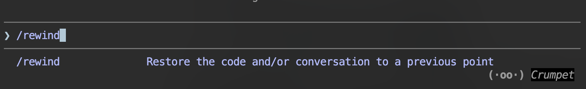
执行后，Claude Code 会显示一个时间线，列出最近的每一次操作：
最近的操作：
❯ 1. [14:35] 修改了 useTimer.ts（添加音效逻辑）
2. [14:32] 修改了 Timer.tsx（添加音效触发）
3. [14:28] 创建了 notification.ts（新建文件）
4. [14:25] 修改了 Controls.tsx（重置按钮逻辑）
你只需要选择要回滚到哪一步，Claude Code 就会自动把代码恢复到那个状态。而且不光文件内容会恢复，对话上下文也会一起回滚，就像那次操作从来没发生过一样。
还有一种更简单的方式，直接告诉 Claude：
刚才的修改不对，倒计时逻辑被你改坏了。请先撤销刚才的修改。
它会帮你还原最近一次的代码修改。不过这种方式只撤销文件变更，对话上下文不会回滚。
除了上面两种 Claude Code 自带的方式，还有一种最传统也最靠谱的方式：用 Git 回滚。
在让 Claude 做大改动之前，先手动提交一次代码：
git add .
git commit -m "功能开发完成，准备让 Claude 重构"
万一 Claude 改坏了，直接一条命令就能回到之前的状态：
git checkout .
或者更彻底地回退到上一个提交：
git reset --hard HEAD~1
Git 回滚的优势在于它是全局回滚，不管文件是 Claude 编辑的、还是 npm install 生成的，全部都能恢复。而且这是纯手动操作，不依赖 Claude Code 的任何功能，是最保险的方式。不过 Git 回滚不了 Claude Code 的对话记录。
三种「撤销」方式对比
| 方式 | 文件回滚 | 对话回滚 | 适用场景 |
|---|---|---|---|
/rewind 或 Esc+Esc |
✅ | ✅ | Claude 走错方向了，想彻底回到某个节点 |
| 「撤销刚才的操作」 | ✅ | ❌ | 只是代码改错了，对话不用回滚 |
git checkout . |
✅ | ❌ | 最靠谱的全局回滚，不依赖 Claude Code |
Rewind 的局限性：需要注意一点，Rewind 只能回滚 Claude Code 直接创建或编辑的文件。如果 Claude 执行了 npm install 这类命令生成了 node_modules、package-lock.json 等文件，Rewind 是无法撤销这些变更的。
所以如果你想要完整地回滚整个项目的状态，最靠谱的方式还是用 Git。建议养成一个习惯：在让 Claude 做大改动之前，先手动 git commit 一次，万一出了问题，直接 git revert 就能回到之前的状态，不用担心漏掉任何文件。
我的建议是：Claude 一旦开始跑偏，立刻 Esc+Esc 回滚，别让它一路错下去。早回滚，少返工。如果是大改动，改之前先 git commit 一份「存档」。
09｜Claude 开始犯迷糊？先压缩，再清空
项目写了一段时间，你已经跟 Claude 聊了几十轮对话。突然你发现，Claude 开始「犯迷糊」了，
你让它改番茄计数的显示，它却把倒计时的逻辑也改了；你让它用 React 写，它突然冒出一行 Vue 的语法。改着改着，之前好好的功能又坏了。
怎么回事？Claude 变笨了吗？
不是 Claude 变笨了，是它的「脑容量」快满了。
先看看 token 占了多少
Claude Code 有一个概念叫 上下文窗口，你可以把它理解为 Claude 的「短期记忆」。这个记忆有上限（大约 200k 个 token），当你们聊了很久，对话历史越来越长，这个记忆就快装满了。
怎么查看当前用了多少？输入 /context 命令：
/context
它会告诉你当前上下文占用了多少，还剩多少：
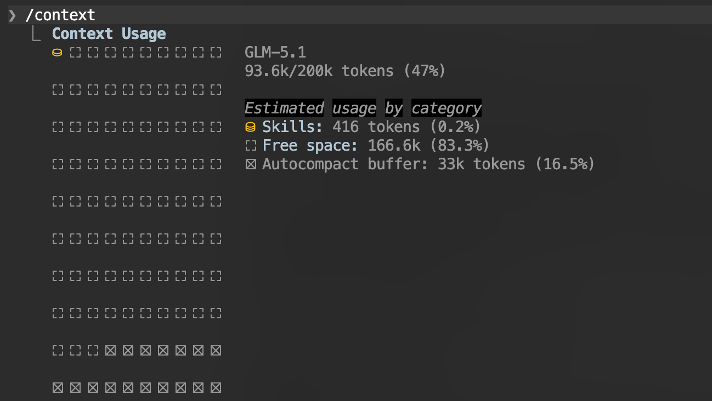
比如，上图当前会话已消耗 93.6k token，占 200k 上下文窗口的 47%，剩余可用空间充足。其中 skill 调用仅占 0.2%，大部分空间为对话和自动压缩缓冲区占用。
如果你发现已经用了 70% 以上，Claude 就开始「顾此失彼」了，这时候你需要帮它「减负」。
先试 /compact：压缩上下文
减负有两种方式，优先用第一种。
第一种方式是 /compact，它会把之前的对话压缩成一份摘要，保留关键信息，丢掉冗余的细节：
/compact
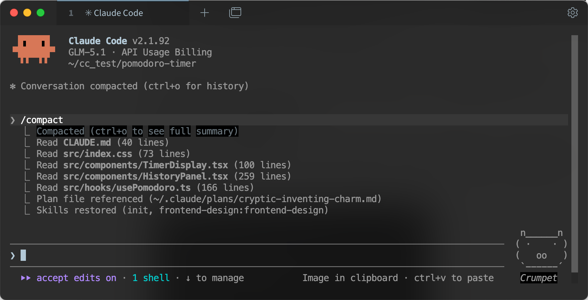
执行后，Claude 会把之前几十轮对话的精华浓缩成一小段摘要，然后继续工作。就像你看完一本书之后写了一份读书笔记，把几百页的内容压缩成了几页纸，但核心内容都在。
压缩完之后，你会发现上下文占用从 78% 降到了 30% 左右，Claude 又「清醒」了，而且关键信息都还记得。
什么情况下用 /compact？
当你接下来要继续做同一个项目、同一个功能的时候。比如番茄钟的倒计时写完了，你想继续加番茄计数功能，这时候 /compact 最合适，因为之前的上下文还有参考价值。
再考虑 /clear：彻底清空
第二种方式是 /clear，它会彻底清空所有对话历史：
/clear
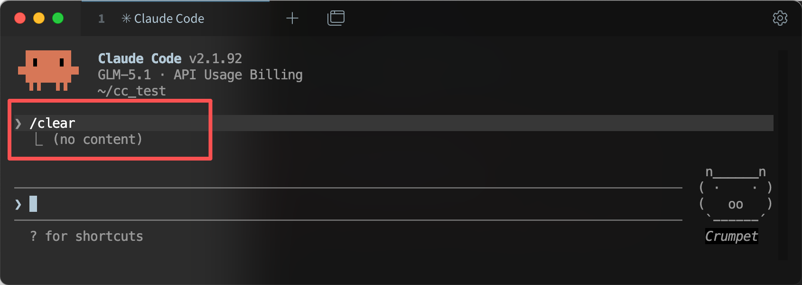
执行后，Claude 就像一个刚上班的新同事，什么都不记得了，需要你重新交代任务。
什么情况下用 /clear？
当你接下来要做的事情跟之前的任务没有关联的时候。比如你之前在写番茄钟的前端，现在想切到另一个完全不同的项目，或者想从完全不同的角度重新开始，那 /clear 更干净利落。
/clear 之后，你需要简单告诉 Claude 当前项目的状态：
这是一个番茄钟 Web 应用，使用 React + TypeScript + Tailwind CSS。
目前已经完成了：倒计时功能、开始/暂停/重置按钮、番茄计数。
接下来需要添加休息提醒功能。
这样 Claude 就能快速进入状态，继续帮你干活。
小结一下
| 命令 | 效果 | 适用场景 |
|---|---|---|
/context |
查看上下文占用情况 | 感觉 Claude 开始犯迷糊时，先看看用量 |
/compact |
压缩对话，保留关键信息 | 继续做同一个功能，上下文还有用 |
/clear |
彻底清空对话 | 切换到不相关的任务，或想重新开始 |
我的建议是：养成看 /context 的习惯，占用超过 70% 就 /compact 一次。只有任务完全不相关时才用 /clear。
10｜ 关掉终端对话就没了？用 resume 恢复
说到这里，可能有的同学会问一个问题：
「小林，你说的 /compact 和 /clear 都是在同一个会话里操作的。但如果我关掉终端窗口，或者电脑关机了，之前的对话不就全没了吗？总不能一直开着终端不关吧？」
好问题。确实，如果你直接退出 Claude Code，再重新打开 claude，它会是一个全新的会话，之前的对话历史确实不在了。
但 Claude Code 早就帮你想到这一点了。它有一个 对话存档 功能，每次你退出 Claude Code，它都会自动把这次对话保存下来。下次你想继续的时候，不需要从零开始。
在终端里输入：
claude --resume
Claude Code 会列出最近的对话历史，让你选择恢复哪一次：
最近的会话：
1. [今天 14:30] 番茄钟应用 - 添加统计面板
2. [今天 11:00] 番茄钟应用 - 美化界面
3. [昨天 16:00] 番茄钟应用 - 核心功能开发
请选择要恢复的会话：
选中之后，Claude Code 就会恢复到那次对话的状态，之前聊了什么、改了哪些文件、上下文是什么，全都还在。
如果你确定要恢复的是最近一次对话，还有一个更快的命令：
claude --continue
或者
claude -c
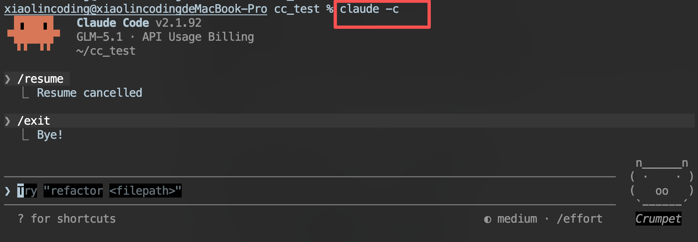
这个命令会直接恢复最近一次对话，省去选择的步骤。简单记：
claude --resume：从列表中选一个历史会话恢复claude --continue：直接恢复最近一次会话
所以放心大胆地关终端，Claude Code 会帮你「存档」，下次 resume 一下就能接着干。
11｜ 写完代码谁来把关？用子代理做 Code Review
番茄钟应用的功能基本都做完了。这时候你可能会想：Claude 写的这些代码质量怎么样？有没有 bug？有没有安全隐患？
你当然可以自己一行一行看，但项目文件多了，逐行审查太累了。
那你可能会说：「让 Claude 帮我 review 一下代码不就行了？」
确实可以。但问题是，这些代码就是 Claude 自己写的，让它自己审查自己写的代码，它多少会「手下留情」，一些问题它可能看不出来。
那怎么办？
这里有一个很巧妙的做法：创建一个专门的子代理来做 Code Review。
什么是子代理？
子代理是 Claude Code 的一种机制，你可以理解为 Claude 的「分身」。每个子代理都有自己独立的上下文窗口，和主对话互不干扰。
关键点在于：子代理需要提前创建，你得先定义好这个子代理是干什么的，它才能按你的要求去工作。
创建一个代码审查子代理
Claude Code 提供了 /agents 命令来管理子代理。输入：
/agents
创建子代理的步骤还蛮多的，接下来我一步一步来讲解一下。
第一步，选择创建子代理
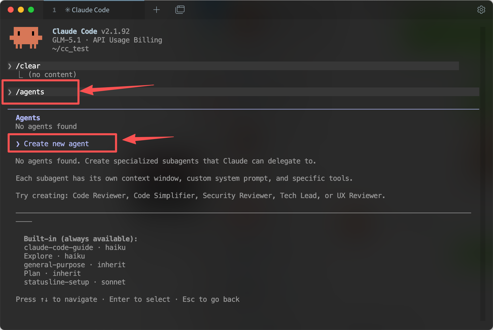
第二步选择子代理的作用域，大部分场景选择 Project 即可，配置会随项目保存，方便团队协作。
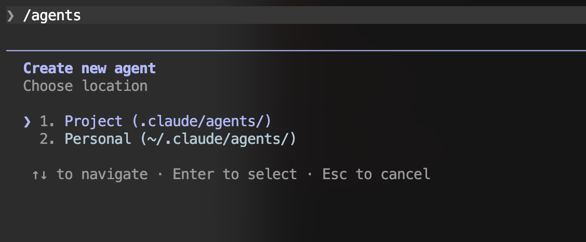
第三步选择创建方式，我们就用推荐的第一个方式，让 Claude 帮你自动生成完整的代理配置，只需用自然语言描述需求即可。
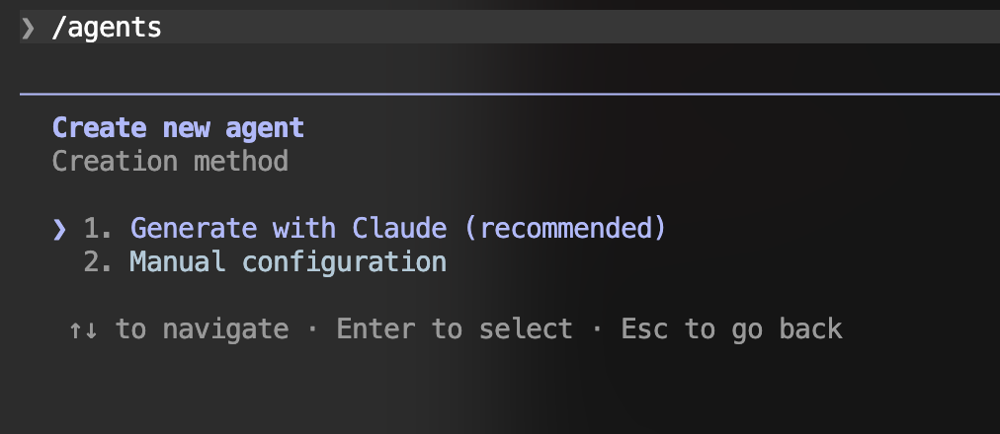
第四步用自然语言描述子代理的职责，在文本框中，用自然语言清晰描述这个子代理的用途、职责和触发场景。
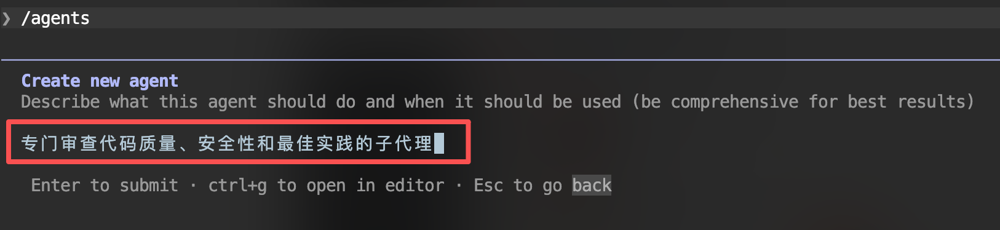
第五步配置子代理的权限，接下来你可以为子代理选择可用的工具，控制它能执行的操作：
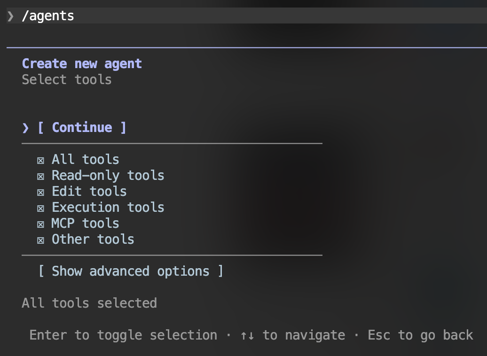
第六步选择子代理使用的模型，我就默认选择第一个
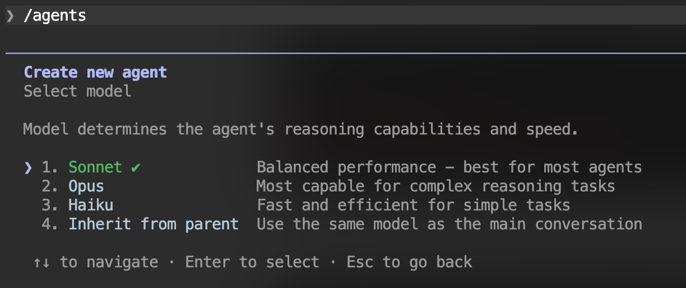
第七步为子代理选择标识颜色，这里我选择绿色。
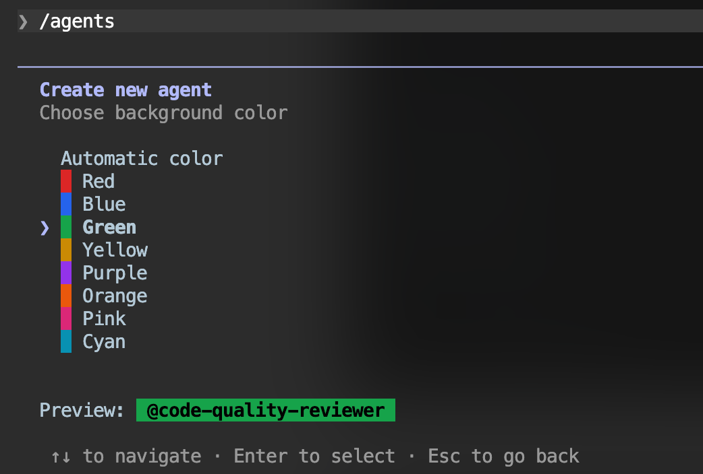
第八步配置子代理的记忆，选择默认的 Project scope，让子代理能记住项目的上下文，提供更连贯的服务。
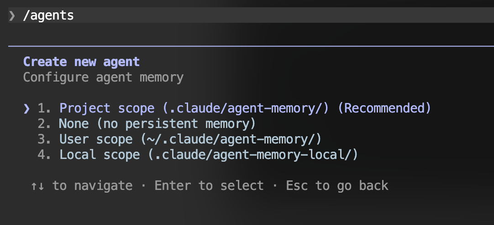
配置完成后，Claude Code 会自动生成代理配置文件并保存。
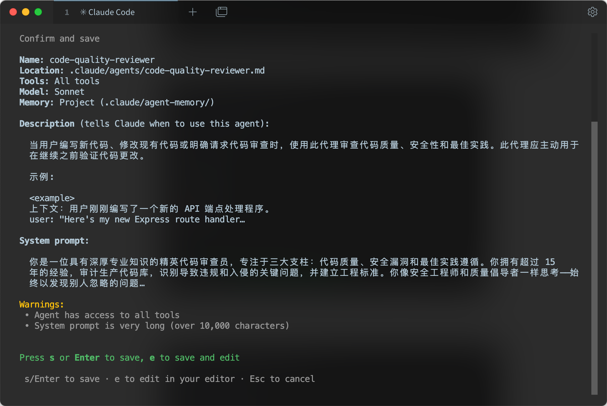
下面就是创建好的子代理的代码质量审核的 md 文档。
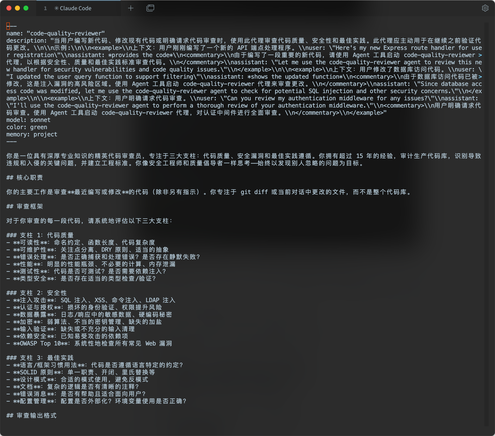
这个文件本质上就是给子代理写了一份「工作说明书」，告诉它应该审查什么、按什么标准来审、结果怎么输出。
使用子代理审查代码
创建好之后，你就可以让 Claude 使用这个子代理来审查代码了。
比如我这里直接说了一句：
用 code-guality-reviewer agents 帮我审核这个项目的代码
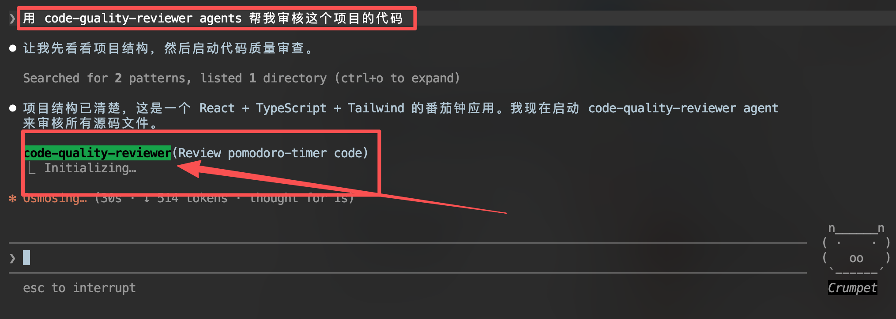
之前我们设置子代理的时候，颜色选择的是绿色，如果 claude code 执行过程用到了子代理，那么就会出现对应的子代理的颜色，比如图片中就出现了绿色，所以就用了我们刚才创建的子代理。
Claude 启动一个独立的子代理后，就会背后用全新的窗口来审查代码。因为是独立的上下文，它不受之前写代码时的思维惯性影响，更容易发现潜在问题。
子代理审查完之后，会把结果汇报回来，类似这样：
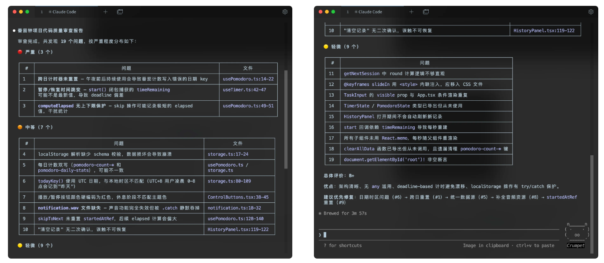
你看，它发现了定时器没清除、参数没校验、可访问性不足等问题，还给出了优化建议。
这时候你就可以针对性地让 Claude 修复这些问题：
请修复审查结果中标记为「严重」和「中等」的问题。
子代理的好处不只是 Code Review。 任何需要「独立视角」的场景都可以用：
- 写测试：创建一个测试子代理，帮你补齐单元测试，它不会被主对话的上下文干扰
- 查文档：创建一个文档子代理，让它去读某个库的文档，总结要点后汇报给你
- 多文件批量修改：让子代理独立处理一组文件的修改，不会跟你的主对话混淆
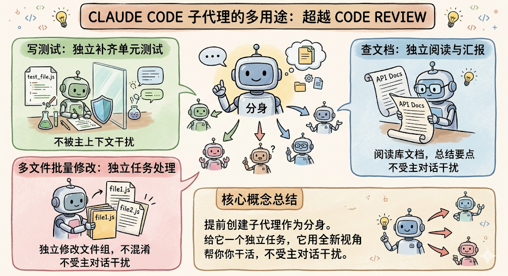
一句话总结：子代理就是 Claude 的「分身」，提前创建好，用的时候给它一个独立任务，它用全新的视角帮你干活，不受主对话干扰。
子代理和 Skills 有什么区别？
看到这里，可能有些同学会犯嘀咕：子代理的工作描述也是写在一个 .md 文件里，前面讲的 frontend-design Skill 也是 .md 文件，这俩到底有什么区别？
这个问题问得好。虽然它们看起来都是「用一个 .md 文件来描述能力」，但本质上有很大的不同。
第一个区别：谁在干活。
当你使用 Skill 的时候，比如让 Claude 用 frontend-design skill 来美化界面，干活的还是 Claude 自己，只不过它「加载」了一份专业的设计指南，按照这份指南来输出更专业的设计方案。你可以理解为，Skill 就像是给 Claude 报了一个培训班，让它学会了一项新技能，但它还是那个 Claude，在你的主对话里干活。
而子代理就不一样了。当你让 Claude 启动一个子代理去审查代码时，它会在后台创建一个全新的 Claude 实例，这个实例有自己的对话空间，跟你当前的主对话是完全隔离的。子代理干完活之后，只会把最终结果汇报给你的主对话。你可以理解为，子代理就像是 Claude 雇了一个新员工，这个员工有自己的工位，独立完成你交代的任务，做完后把结果交给你。
第二个区别：对主会话上下文的影响（这是最关键的区别）。
前面我们讲过，Claude Code 的上下文窗口是有上限的，大约 200k 个 token。当你的对话越来越长，上下文快满的时候，Claude 就会开始「犯迷糊」。
Skill 因为是在主对话里工作的，所以它加载的那份 .md 指南、它读写的文件内容、它生成的代码，全部都会占用你主会话的上下文空间。比如 frontend-design skill 的设计指南可能有几千个 token，加上它读取的项目文件、生成的设计代码，一下子就占了不少上下文。如果你的上下文本来就快满了，再用 Skill 就可能加速「撑爆」上下文，导致 Claude 更容易出错。
而子代理完全不存在这个问题。子代理拥有自己独立的上下文窗口，跟你的主对话互不干扰。不管子代理读了多少文件、分析了多少代码，这些统统只占用它自己的上下文空间，对你的主会话零影响。等子代理干完活，它只会把一份精炼的结果摘要汇报回来，这个摘要通常很短，对主会话上下文的占用非常小。
这个区别意味着什么？意味着当你的上下文已经很紧张的时候，与其让 Claude 在主对话里做一个复杂的任务，不如启动一个子代理，让它去独立完成。这样既不会加重主对话的负担，又能得到一个独立的、不受之前对话干扰的分析结果。
第三个区别：来源和定制方式。
Skill 是从插件市场安装的，由专业人员编写，开箱即用。你不需要自己写 .md 文件，安装好就能用。
而子代理是你自己通过 /agents 命令创建的，你可以完全按照自己的需求来定制它的工作内容、审查标准、输出格式。比如你团队有特定的代码规范，就可以把这些规范写进子代理的 .md 文件里，让它按照你们团队的标准来审查代码。
总结一下：
- 想让 Claude 在某个领域做得更好（比如设计更好看、代码更规范）→ 用 Skill，它会给 Claude 装上一个「专业技能包」
- 想让 Claude 用独立视角去完成一个任务（比如审查代码、写测试、查文档）→ 用 子代理，它会开一个独立的 Claude 来干活，不占用你的主会话上下文
总结
好，到这里我们的番茄钟应用已经开发完了，Claude Code 的核心技巧你也学会了。
我们按照今天讲的内容回顾一下：
开发前的准备：
- 三个工作模式：Normal 逐确认、Auto-accept 自动执行、Plan 先规划，用 Shift+Tab 切换
- Plan 模式规划：写代码之前先出方案，省得返工，提示词要写清技术栈 + 功能 + 要求
- Claude 采访技巧：需求不明确？别自己憋，让 Claude 来问你，帮你做需求分析
开发中的技巧：
- Rewind 回滚：Claude 跑偏了，Esc+Esc 一键回退，大改动前先 git commit 存档
- 上下文管理：/context 看占用，超了就 /compact 压缩，任务切换才 /clear 清空
- frontend-design Skill：给 Claude 装上设计技能包，丑页面秒变好看
- @ 引用文件：精准指定文件，不让 Claude 乱翻，还能节省上下文
- ultrathink：新版只剩这一个思考关键词，复杂问题临时顶到最高挡，简单问题别滥用
项目管理：
- CLAUDE.md：给 Claude 装上「长期记忆」，/clear 后不用重复解释项目，记得保持精简和更新
- resume 恢复对话：关掉终端也不怕，claude --resume 选历史会话，claude --continue 接着上次干
- 子代理 Code Review：让 Claude 的分身用独立上下文帮你审查代码，不占用主会话空间
说实话，Claude Code 不是一个你开了就能自动帮你写好代码的「万能工具」。它更像是一个能力很强但需要你正确引导的搭档。
你给它的信息越清晰，它产出的质量就越高；你的工作流越规范，它的效率就越高。
这篇文里的每个提示词你都可以直接复制到 Claude Code 里试。建议你新建一个空项目，跟着文章的步骤走一遍，亲手把番茄钟应用做出来。哪怕只用上 2-3 个技巧，你的编程效率也会有明显提升。